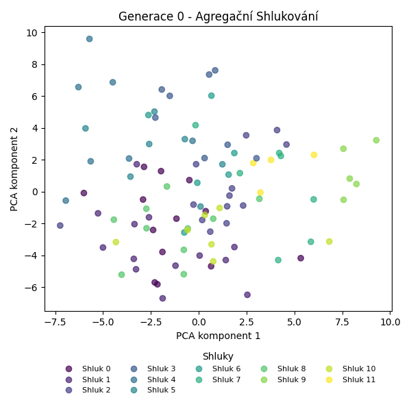
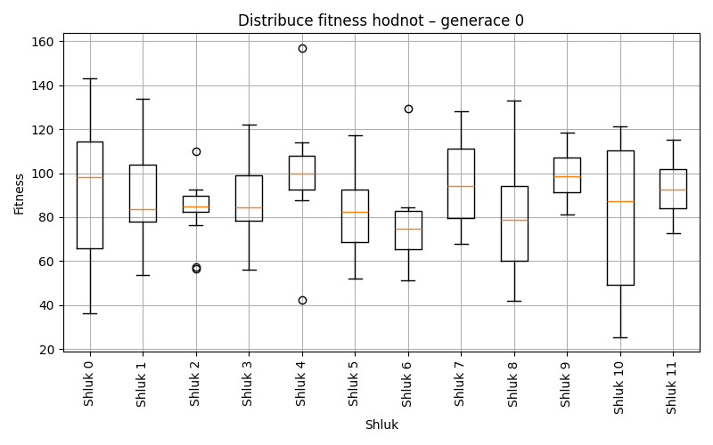
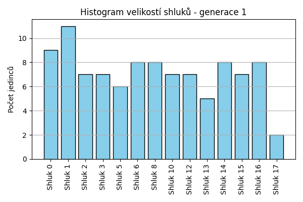
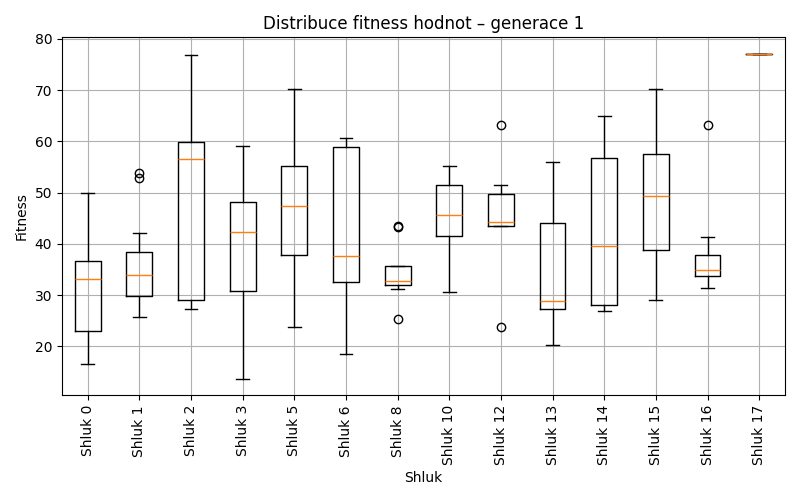
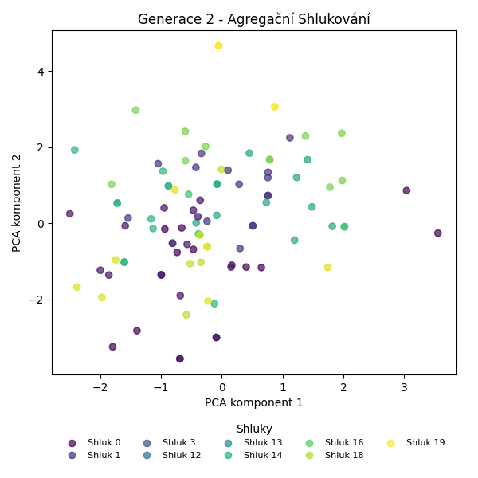
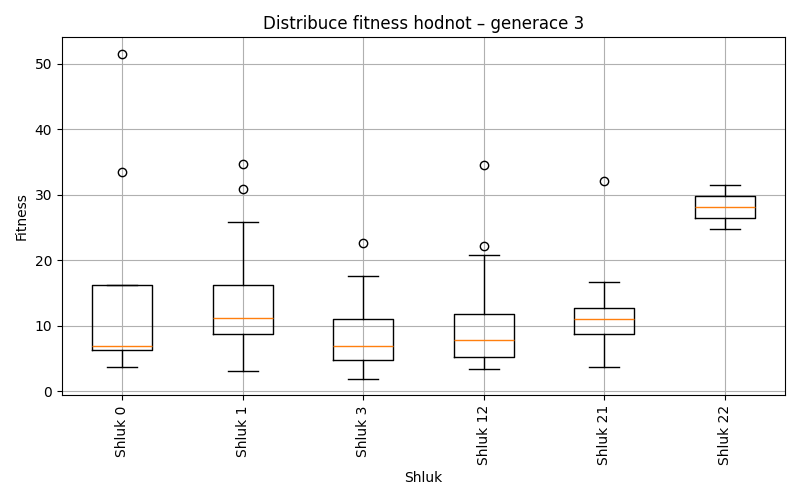
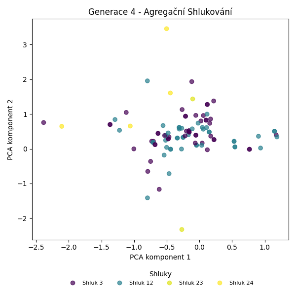
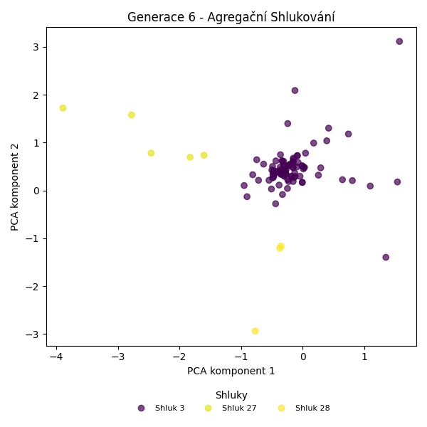
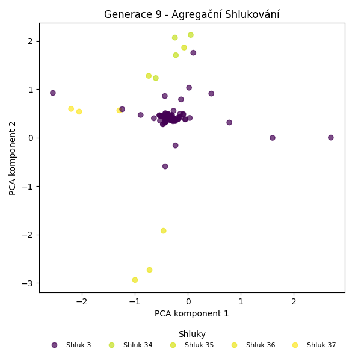

Agregační shlukování – Vývoj
Generace 0



Generace 1


Posun centroidů mezi generací 0 → 1:
- Shluk 0: 8.0076
- Shluk 1: 7.1157
- Shluk 2: 6.7365
- Shluk 3: 7.2848
- Shluk 4: 10.0792
- Shluk 5: 10.8162
- Shluk 6: 9.0031
- Shluk 7: 8.3094
- Shluk 8: 9.6613
- Shluk 9: 5.4388
- Shluk 10: 8.8034
- Shluk 11: 10.7524
- Shluk 12: 8.9692

Generace 2


Posun centroidů mezi generací 1 → 2:
- Shluk 0: 4.8266
- Shluk 1: 6.9200
- Shluk 2: 4.8514
- Shluk 3: 5.7964
- Shluk 4: 5.1830
- Shluk 5: 8.8026
- Shluk 6: 3.7995
- Shluk 7: 6.3289

Generace 3

Posun centroidů mezi generací 2 → 3:
- Shluk 0: 4.3148
- Shluk 1: 3.8610
- Shluk 2: 3.5256
- Shluk 3: 2.0315
- Shluk 4: 5.6919
- Shluk 5: 2.1478
- Shluk 6: 6.4810
- Shluk 7: 3.2311

Generace 4


Posun centroidů mezi generací 3 → 4:
- Shluk 0: 1.8217
- Shluk 1: 3.1710
- Shluk 2: 5.1911
- Shluk 3: 2.0505
- Shluk 4: 2.6310

Generace 5
Posun centroidů mezi generací 4 → 5:
- Shluk 0: 2.0809
- Shluk 1: 1.9611
- Shluk 2: 5.2715
Generace 6


Posun centroidů mezi generací 5 → 6:
- Shluk 0: 1.7518
- Shluk 1: 3.8354
- Shluk 2: 5.5947
Generace 7

Posun centroidů mezi generací 6 → 7:
- Shluk 0: 0.3365
- Shluk 1: 4.5962
- Shluk 2: 6.4678
- Shluk 3: 6.0912
- Shluk 4: 5.5231
- Shluk 5: 7.7900

Generace 8


Posun centroidů mezi generací 7 → 8:
- Shluk 0: 0.2693
- Shluk 1: 6.9157
- Shluk 2: 5.5444
- Shluk 3: 6.4210
Generace 9

Posun centroidů mezi generací 8 → 9:
- Shluk 0: 3.2115
- Shluk 1: 7.3787
- Shluk 2: 4.3849
- Shluk 3: 5.2049